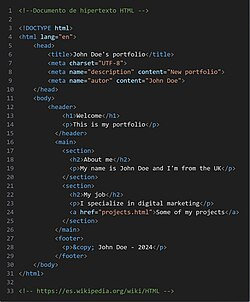

HTML acrónimo en inglés de HyperText Markup Language ('lenguaje de marcado de hipertexto'), hace referencia al lenguaje de marcado utilizado en la creación de páginas web. Este estándar que sirve de referencia del software que interactúa con la elaboración de páginas web en sus diferentes versiones. Define una estructura básica y un código (denominado código HTML) para la presentación de contenido de una página web, que incluye texto, imágenes, videos, juegos, entre otros elementos. Este estándar es gestionado por el World Wide Web Consortium (W3C) o Consorcio WWW, una organización dedicada a la estandarización de la mayoría de las tecnologías asociadas a la web, especialmente en lo relacionado con su escritura e interpretación. HTML se considera el lenguaje web más importante y su invención crucial para el surgimiento, desarrollo y expansión de la World Wide Web (WWW). Es el estándar que prevalece en la visualización de páginas web y es adoptado por todos los navegadores actuales.
El lenguaje HTML se fundamenta en la diferenciación como filosofía de desarrollo. Para añadir elementos externos a una página como imágenes, vídeos o scripts, no se incrustan directamente en el código de la página. En su lugar, se realiza una referencia a la ubicación de cada elemento mediante texto. De este modo, la página web contiene solamente texto, dejando al navegador web (intérprete del código) la labor de unir todos los elementos y visualizar la página final. Al ser un estándar, HTML pretende ser un lenguaje que permita que cualquier página web escrita en una determinada versión, pueda ser interpretada de manera uniforme (siguiendo el estándar) por cualquier navegador web actualizado.
HTML es un lenguaje de marcado que posibilita definir la estructura de nuestro documento mediante etiquetas. Este lenguaje ofrece una gran adaptabilidad, una estructuración lógica y es fácil de interpretar tanto por humanos como por máquinas.
A lo largo de sus diferentes versiones, HTML ha experimentado la incorporación y eliminación de distintas características, con el propósito de optimizar su eficiencia y facilitar el desarrollo de páginas web compatibles con varios navegadores y plataformas (PC de escritorio, portátiles, teléfonos inteligentes, tabletas, etc.) No obstante, para interpretar adecuadamente una nueva versión de HTML, los desarrolladores de navegadores web deben incorporar estos cambios, y los usuarios debe ser capaces de usar la nueva versión del navegador con todas las actualizaciones aplicadas. Por lo general, estos cambios se implementan mediante actualizaciones automáticas (Firefox, Chrome) u ofreciendo una nueva versión del navegador con todas las modificaciones incorporadas, disponible en un sitio web de descarga oficial (Internet Explorer). En consecuencia, un navegador desactualizado no podrá interpretar de manera precisa una página web escrita en una versión de HTML superior a la que soporta, lo que obliga a menudo a los desarrolladores a aplicar técnicas y cambios para resolver problemas de visualización e incluso de interpretación de código HTML.
Así mismo, las páginas web creadas en una versión anterior de HTML deberían ser actualizadas o reescritas, aunque esto no siempre se cumple. Por esta razón, algunos navegadores todavía conservan la capacidad de interpretar páginas web en versiones anteriores de HTML. Estas diferencias en la interpretación de una página web persisten debido a estas razones, generando discrepancias entre distintos navegadores y versiones.
|
Lenguaje de marcado de hipertexto (HTML) |

|
|  |
|
Ejemplo de código fuente escrito en HTML. |